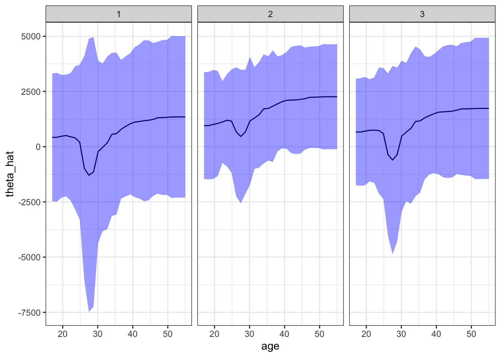

library(data.table)
library(tidyverse)
library(grf)13 Forest-based CATE Estimators
In Chapter 12, we saw some special cases of R-learner/DML where the final model is estimate by parametrically using a linear-in-parameter model and non-parametrically using extreme gradient boosting. Here, we learn two methods that estimate CATE non-parametrically: causal forest (Athey, Tibshirani, and Wager 2019) and orthogonal forest (Oprescu, Syrgkanis, and Wu 2019).
Left to be added + how variance is estimated + balance + ATE + linear correction with locally weighted linear regression
13.1 Model
The heterogeneous treatment effect model of interest in this chapter is the same as the one in Chapter 12.
\[ \begin{aligned} Y & = \theta(X)\cdot T + g(X) + \varepsilon \\ T & = f(X) + \eta \end{aligned} \tag{13.1}\]
- \(Y\): dependent variable
- \(T\): treatment variable (can be either binary dummy or continuous)
- \(X\): features
Causal forest and orthogonal random forest is consistent only if the following conditions fold.
- \(E[\varepsilon|X] = 0\)
- \(E[\eta|X] = 0\)
- \(E[\eta\cdot\varepsilon|X] = 0\)
13.2 Causal Forest
13.2.1 Brief description of how CF works
This section provides a brief and cursory description of how CF works. A much more detailed treatment of how CF (and also GRF) works along with the explanations of hyper-parameters is provided in ?sec-understand-grf-example.
Causal Forest (CF) (as implemented by the R grf package or python econml package) is a special type of R-learner (also a DML) and also a special case of generalized random forest (GRF).
CF can be implemented using the R grf package or python econml package. Both of them implements CF as an R-learner. However, the original causal forest proposed in Wager and Athey (2018) does not follow an R-learner procedure.
Let \(\hat{f}(X_i)\) and \(\hat{g}(X_i)\) denote the estimation of \(E[Y|X]\) and \(E[T|X]\), respectively. Further, let \(\hat{\tilde{Y_i}}\) and \(\hat{\tilde{T_i}}\) denote \(Y_i - \hat{f}(X_i)\) and \(T_i - \hat{g}(X_i)\), respectively.
Then, CF estimates \(\theta(X)\) at \(X = X_0\) by solving the following equation:
\[ \begin{aligned} \hat{\theta}(X_0) = argmin_{\theta}\;\;\sum_{i=1}^N \alpha_i(X_i, X_0)[\hat{\tilde{Y_i}} - \theta\cdot \hat{\tilde{T_i}}]^2 \end{aligned} \tag{13.2}\]
where \(\alpha_i(X_i, X_0)\) is the weight given to each \(i\). The F.O.C is
\[ \begin{aligned} 2 \cdot \sum_{i=1}^N \alpha_i(X_i, X_0)[\hat{\tilde{Y_i}} - \theta\cdot \hat{\tilde{T_i}}]\hat{\tilde{T_i}} = 0 \end{aligned} \]
\[ \begin{aligned} \hat{\theta}(X_0) = \frac{\sum_{i=1}^N\alpha_i(X_i, X_0)\cdot\hat{\tilde{Y}}_i\cdot \hat{\tilde{T}}_i}{\sum_{i=1}^N\alpha_i(X_i, X_0)\cdot\hat{\tilde{T}}_i\cdot \hat{\tilde{T}}_i} \end{aligned} \tag{13.3}\]
Unlike the DML approaches we saw in Chapter 12 that uses a linear model as the final model, CF does not assume any functional form for how \(X\) affects \(\theta\) as you can see from the above minimization problem. As mentioned earlier, CF is a special case of GRF (discussed in Chapter 17), so CF is also a local constant regression (see Section 1.3.1 for a brief discussion on local regression).
\(\alpha_i(X_i, X_0)\) is determined based on the trees trained based on the pseudo outcomes that are defined specifically for causal forest estimation. Suppose \(T\) trees have been built and let \(\eta_{i,t}(X_i, X_0)\) be 1 if observation \(i\) belongs to the same leaf as \(X_0\) in tree \(t\). Then,
\[ \begin{aligned} \alpha_i(X_i, X_0) = \frac{1}{T}\sum_{t=1}^T\frac{\eta_{i,t}(X_i, X_0)}{\sum_{i=1}^N\eta_{i,t}(X_i, X_0)} \end{aligned} \tag{13.4}\]
So, the weight given to observation \(i\) is higher if observation \(i\) belongs to the same leaf as the evaluation point \(X_0\) in more trees.
13.2.2 Training a causal forest
We can use the causal_forest() function from the grf package to train a CF model in R. In Python, you can use CausalForestDML() from the econml package or GRFForestRegressor from the skgrf package.
As of now, there are some notable differences between grf and econml.
#=== load the Treatment dataset ===#
data("Treatment", package = "Ecdat")
#=== convert to a data.table ===#
(
data <-
data.table(Treatment) %>%
#=== create an id variable ===#
.[, id := 1:.N]
)Here are the variables in this dataset that we use.
re78(\(Y\)): real annual earnings in 1978 (after the treatment)treat(\(T\)):TRUEif a person had gone through a training,FALSEotherwise.
\(X\) includes
re74: real annual earnings in 1978 (after the treatment)age: ageeduc: education in yearsethn: one of “other”, “black”, “hispanic”married: married or not
grf::causal_forest() takes only numeric values for \(X\). So, we will one-hot encode ethn, which is a factor variable at the moment.
(
data_trt <- mltools::one_hot(data)
) treat age educ ethn_other ethn_black ethn_hispanic married re74
1: TRUE 37 11 0 1 0 TRUE 0.0
2: TRUE 30 12 0 1 0 FALSE 0.0
3: TRUE 27 11 0 1 0 FALSE 0.0
4: TRUE 33 8 0 1 0 FALSE 0.0
5: TRUE 22 9 0 1 0 FALSE 0.0
---
2671: FALSE 47 8 1 0 0 TRUE 44667.4
2672: FALSE 32 8 1 0 0 TRUE 47022.4
2673: FALSE 47 10 1 0 0 TRUE 48198.0
2674: FALSE 54 0 0 0 1 TRUE 49228.5
2675: FALSE 40 8 1 0 0 TRUE 50940.9
re75 re78 u74 u75 id
1: 0.0 9930.05 TRUE TRUE 1
2: 0.0 24909.50 TRUE TRUE 2
3: 0.0 7506.15 TRUE TRUE 3
4: 0.0 289.79 TRUE TRUE 4
5: 0.0 4056.49 TRUE TRUE 5
---
2671: 33837.1 38568.70 FALSE FALSE 2671
2672: 67137.1 59109.10 FALSE FALSE 2672
2673: 47968.1 55710.30 FALSE FALSE 2673
2674: 44221.0 20540.40 FALSE FALSE 2674
2675: 55500.0 53198.20 FALSE FALSE 2675We now have ethn_black, ethn_hispanic, and ethn_other from ethn. The model we are estimating is as follows:
\[ \begin{aligned} re78 & = \theta(age, re74, educ, ethn\_hipanic, ethn\_black, married)\cdot treat + g(age, re74, educ, ethn\_hipanic, ethn\_black, married) + \varepsilon \\ treat & = f(age, re74, educ, ethn\_hipanic, ethn\_black, married) + \eta \end{aligned} \]
In running causal_forest(), there are many hyper-parameters and options that we need to be aware of.
Since CF is a GRF and GRF uses random forest algorithm on appropriate pseudo outcome, it is natural that some of the CF hyper-parameters are the same as the ones for RF (by ranger()).
num.trees: number of treesmtry: number of variables tried in each split (default is \(\sqrt{K}\))min.node.size: minimum number of observations in each leaf (default is 5)
A hyper-parameter that certainly affects tree building process is sample.fraction, which we saw earlier.
sample.fraction: fraction of the data used to build each tree (default is 0.5)
A higher value of sample.fraction means that the trees are more correlated as they share more of the same observations.
There are three honesty-related options.
honesty:TRUEif using honest-sampling, 0 otherwise (default isTRUE)honesty.fraction: fraction of the data (aftersample.fractionis applied) that is grouped into \(J_1\), which is used to determine splitting ruleshonesty.prune.leaves:TRUEif the leaves with no samples are pruned (default isTRUE)
Let’s now train CF using data_trt.
cf_trained <-
grf::causal_forest(
X = data_trt[, .(age, re74, educ, ethn_hispanic, ethn_black, married)] %>% as.matrix(),
Y = data_trt[, re78],
W = data_trt[, treat]
)Here is what cf_trained has as its attributes.
names(cf_trained) [1] "_ci_group_size" "_num_variables"
[3] "_num_trees" "_root_nodes"
[5] "_child_nodes" "_leaf_samples"
[7] "_split_vars" "_split_values"
[9] "_drawn_samples" "_send_missing_left"
[11] "_pv_values" "_pv_num_types"
[13] "predictions" "variance.estimates"
[15] "debiased.error" "excess.error"
[17] "seed" "ci.group.size"
[19] "X.orig" "Y.orig"
[21] "W.orig" "Y.hat"
[23] "W.hat" "clusters"
[25] "equalize.cluster.weights" "tunable.params"
[27] "has.missing.values" For example, you can get \(\theta(X_i)\) by accessing the predictions attribute.
cf_trained$predictions %>% head() [,1]
[1,] 449.5073
[2,] 337.7088
[3,] -484.2860
[4,] 1326.4434
[5,] 604.1448
[6,] 1086.449213.2.3 Predict and interpret CATE
Before looking at how to predict \(\theta(X)\), let’s look at which variables are used to split tree nodes. You can get such information using split_frequencies() on a trained causal forest.
split_frequencies(cf_trained) [,1] [,2] [,3] [,4] [,5] [,6]
[1,] 258 1464 119 31 38 85
[2,] 1362 1125 665 39 151 266
[3,] 1984 491 1056 35 219 200
[4,] 1437 321 786 8 118 71In this table, rows represent the depth of the nodes and columns represent covariates. For example, the second variable (educ) was used to do the first split 1464 times and split a node at the second depth 1125 times. A variable with higher numbers of splits at earlier stages is more influential in driving treatment effect heterogeneity. variable_importance() returns a measure of how important each variable is in explaining treatment effect heterogeneity based on the split information.
variable_importance(cf_trained) [,1]
[1,] 0.21900771
[2,] 0.58498841
[3,] 0.10753872
[4,] 0.01362695
[5,] 0.02690857
[6,] 0.04792965So, according to this measure, the second variable (educ) is the most important variable. While variable of importance measure is informative, it does not tell us how the variables are affecting treatment effects. For that, we need to look at \(\theta(X)\) at different values of \(X\).
You can use predict() to predict the treatment effect at \(X\). For example, consider the following evaluation point.
X_0 <-
data.table(
age = 30,
re74 = 40000,
educ = 10,
ethn_hispanic = 0,
ethn_black = 1,
married = TRUE
)Note that the order of columns of the evaluation data must be the same as that of the X in causal_forest() when you trained a CF model. You can set estimate.variance to TRUE to get \(var(\hat{\theta}(X))\) along with the point estimate.
predict(
cf_trained,
newdata = X_0,
estimate.variance = TRUE
) predictions variance.estimates
1 -7351.959 2521470Unlike linear-in-parameter model, there are no coefficients that can immediately tell us how influential each of \(X\) is in driving the treatment effect heterogeneity. One way to see the impact of a variable is to change its value while the value of the rest of \(X\) is fixed. For example, for the given observed value of \(X\) except educ, you can vary the value of educ to see how educ affects the treatment effect. We can do this for all the observations and then can get a good picture of how the treatment effect varies across individuals at different values of educ.
Let’s first create a sequence of educ values at which \(\hat{\theta}\) is predicted.
age_seq <-
data.table(
age = data_trt[, seq(min(age), max(age), length = 30)]
)We then create a dataset where every single individual (observation) in the original data data_trt to have all the age values in age_seq while the value of the rest of \(X\) fixed at their own values.
Confirm what reshape::expand.grid.df does with this simple example.
reshape::expand.grid.df(
data.table(a = c(1, 2, 3)), # first data set
data.table(b = c(1, 2), c = c("a", "b")) # second data set
) a b c
1 1 1 a
2 2 1 a
3 3 1 a
4 1 2 b
5 2 2 b
6 3 2 bdata_te <-
reshape::expand.grid.df(
age_seq,
data_trt[, .(re74, educ, ethn_hispanic, ethn_black, married, id)]
) %>%
data.table()Let’s now predict \(\hat{\theta}\) with their standard error estimates.
(
theta_hat_with_se <-
predict(cf_trained, newdata = dplyr::select(data_te, -id), estimate.variance = TRUE) %>%
data.table() %>%
.[, se := sqrt(variance.estimates)] %>%
setnames("predictions", "theta_hat") %>%
.[, .(theta_hat, se)]
) theta_hat se
1: 196.6412 1643.043
2: 192.1963 1643.774
3: 227.6136 1663.190
4: 316.3815 1659.691
5: 255.4224 1631.758
---
80246: -5501.8036 2370.190
80247: -5469.5475 2383.729
80248: -5466.8952 2413.930
80249: -5429.8050 2404.134
80250: -5429.8050 2404.134Figure 13.1 shows the impact of age on treatment effect for the first three individuals of data_trt. For example, if an individual that has the identical values for \(X\) except age and also this person is 40 years old, then the treatment effect of the training program would be about $1,000. Standard errors are fairly large and treatment effects are not statistically significantly different from 0 at any value of age for all three individuals. The impact of age seems to be very similar for all the individuals. However, you can see shifts in \(\hat{\theta}\) among them. Those shifts are due to the differences in other covariates.
plot_data <- cbind(data_te, theta_hat_with_se)
ggplot(plot_data[id %in% 1:3, ]) +
geom_line(aes(y = theta_hat, x = age)) +
geom_ribbon(
aes(
ymin = theta_hat - 1.96 * se,
ymax = theta_hat + 1.96 * se,
x = age
),
fill = "blue",
alpha = 0.4
) +
facet_grid(. ~ id) +
theme_bw()
Figure 13.2 shows the box-plot of treatment effects for all the individuals. Note that variations observed at each age value is due to heterogeneity in treatment effect driven by covariates other than age. It looks like the three individuals looked at are exceptions. For the majority of individuals, the estimated treatment effects are negative at any value of age.
ggplot(plot_data) +
geom_boxplot(aes(y = theta_hat, x = factor(round(age, digits = 2)))) +
theme_bw() +
xlab("Age") +
ylab("Estimated treatment effect") +
theme_bw() +
theme(
axis.text.x = element_text(angle = 90)
)You can easily repeat this analysis for other covariates to see their impacts as well.
13.3 Orthogonal Random Forest
References
Athey, Susan, Julie Tibshirani, and Stefan Wager. 2019. “Generalized Random Forests.” The Annals of Statistics 47 (2): 1148–78.
Oprescu, Miruna, Vasilis Syrgkanis, and Zhiwei Steven Wu. 2019. “Orthogonal Random Forest for Causal Inference.” In International Conference on Machine Learning, 4932–41. PMLR.
Wager, Stefan, and Susan Athey. 2018. “Estimation and Inference of Heterogeneous Treatment Effects Using Random Forests.” Journal of the American Statistical Association 113 (523): 1228–42. https://doi.org/10.1080/01621459.2017.1319839.